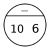

Overview
Learning Objectives
Evidence Statements
Product Outcomes
Materials
Preparation
 Unidade 1Tudo o que você aprendeu no Bootstrap 1...
Unidade 1Tudo o que você aprendeu no Bootstrap 1...Alunos revisarão quase todo o conteúdo do Bootstrap 1, incluindo Círculos de Avaliação, Assinaturas, Expressões que trabalham com strings e figuras, Definições de Variáveis, Definições de Funções, e a Receita de Projeto.
Agenda
5 minIntrodução
30 minExpressões
20 minAssinaturas
30 minA Receita de Projeto
5 minEncerramento
Product Outcomes:
Students define functions to meet a goal, or problem statement.
Standards and Evidence Statements:Length: 90 minutesStandards with prefix BS are specific to Bootstrap; others are from the Common Core. Mouse over each standard to see its corresponding evidence statements. Our Standards Document shows which units cover each standard.
Glossary:
assinatura: uma declaração com o nome, domínio, e imagem de uma função
domínio: o tipo de dado que a função espera receber
imagem: o tipo de dado que a função produz
nome: como nós nos referimos a uma função ou valor definido na linguagem (exemplos: +, *, star, circle)
receita de projeto: uma sequência de passos que ajudam pessoas a documentar, testar, e escrever funções
variáveis
variável: algo que muda
Materials:
Editing environment (WeScheme or DrRacket with the bootstrap-teachpack installed)
Design Recipe Sign
Preparation:
Computer for each student (or pair), running WeScheme or DrRacket
If using DrRacket, make sure the Review.rkt file is loaded
Student workbook folders with names on covers, and something to write with
Types
Functions
Introdução
Expressões
Overview
Students review Racket expressions, defining variables, and circles of evaluation from Bootstrap 1
Learning Objectives
Evidence Statements
Product Outcomes
Materials
Editing environment (WeScheme or DrRacket with the bootstrap-teachpack installed)
Preparation
Computer for each student (or pair), running WeScheme or DrRacket
If using DrRacket, make sure the Review.rkt file is loaded
Student workbook folders with names on covers, and something to write with
Expressões (Time 30 minutos)
Abra esse link em uma nova janela. No início da janela de definições, temos algumas variáveis definidas.
Qual o nome das variáveis que já foram definidas? Qual o valor de cada variável?
Qual seria o resultado se você digitasse o nome de cada variável na Janela de Interações? Pense em um palpite, então clique em "Run" e digite o nome de cada variável na janela de Interações. Seus palpites estavam certos?
Dê uma olhada na variével OUTLINE na linha 20.
Qual forma ela desenha?
Qual o tamanho que ela irá ter?
Ela será sólida ou apenas o contorno?
Que cor ela tem?
Na janela de Interações digite OUTLINE. Tem a forma que você esperava?
O problema é que usamos um nome confuso para uma variável: o nome é "outline"(representa contorno), mas a figura era do tipo "solid". Lembre-se: escolha o nome das variáveis com atenção!Revise a Interface do DrScheme ou a IDE do WeScheme. Relembre os alunos sobre a importância de bons nomes de variáveis: eles fazem o código mais legível, e um nome descritivo torna claro o que está sendo definido.
Em seu arquivo de revisão, defina:
dois Números adicionais
duas Strings adicionais
um Booleano a mais
uma Figura a mais
e pratique e confira os valores usando a janela de interações.
Agora temos valores, e sabemos como definir atalhos para eles. Contudo, também temos várias funções internas que nos permitem brincar com esses valores.Quais funções que você conhece que trabalham com números? De quantas você se lembra?
Relembre os alunos que operações aritméticas, como +, -, *, e / são funções.
Como você desenha um Círculo de Avaliação para a expressão 10 - 6 ?
Qual é a função na expressão acima?
Em qual posição o nome da função é desenhada no Círculo?
Quais são os números que a função - recebeu como Entrada nesse expressão?
Onde os valores de Entrada são desenhados no círculo? Em que ordem os números devem aparecer?
A expressão 10 - 6 pode ser desenhada como um Círculo de Avaliação assim: Como você converte esse Círculo de Avaliação para código em Racket?
Qual é o primeiro caractere que você digita quando converte um Círculo de Avaliação? (Dica: se vocẽ partir um círculo no meio, você fica com duas coisas que se parecem com quais tecla do teclado?)
O que vem a seguir em uma expressão Racket, dentro dos parênteses?
Onde você olha a seguir? Como você sabe qual entrada vem primeiro no código Racket?
Como você termina, ou fecha uma expressão em Racket?
O Círculo de Avaliação acima foi convertido para esta expressão em Racket: (- 10 6). Por que estaria errado escrever (- 6 10)?Vá para a Page 3 em sua apostila. Cada linha tem uma expressão matemática. Você terá que converter as expressões para Círculos de Avaliação, e depois converter o Círculo em código Racket.
Revise os círculos de avaliação e círculos aninhados com números, bem como convertê-los para código em Racket. Relembre os alunos que as entradas são lidas da esquerda para a direita, e essa ordem é importante. Certifique-se de desafiar os alunos com Círculos que estão aninhados pelo menos em dois níveis de profundidade. Muitos alunos que são capazes de resolver aninhamentos simples ainda encontram dificuldade quando lidam com expressões mais complexas.
Assinaturas
Overview
Learning Objectives
Evidence Statements
Product Outcomes
Materials
Preparation
Assinaturas (Time 20 minutos)
É importante manter o controle de como essas funções funcionam, e o Bootstrap 1 introduziu a ideia de Assinaturas. A assinatura para a função star é mostrada abaixo. As Assinaturas resumem três partes essenciais sobre uma função:
O Nome da função: neste caso, star
O Domínio da função, que são os tipos de dados que a função recebe: neste caso, um Número e duas Strings.
A Imagem dessa função, é o tipo de dados que essa função produz: nesse caso uma Figura.
A assinatura é uma anotação que escrevemos para nós mesmos sobre como usar a função. Assim como no Bootstrap 1, será muito útil manter o registro das assinaturas de cada função que você aprender. A primeira página da sua apostila tem uma tablea chamada "Assinaturas", onde você pode (e deve!) copiar cada assinatura que você for aprendendo.A Assinatura para + é mostrada a seguir. Escreva as Assinaturas para *, -, / e sqrt
Enfatize aos alunos que a assinatura de uma função te diz MUITO sobre ela. Também pode ser útil pedir-lhes para pensar em motivos de porque Assinaturas são uma coisa boa, para que eles sejam capazes de dizer com sua própria voz. Revise assinaturas de funções que produzem figuras, como circle, triangle, rectangle, ellipse, etc.
Abaixo temos algumas expressões usando funções que você viu no Bootstrap 1. Para cada uma, identifique qual função está sendo utilizada e escreva sua Assinatura em sua página de Assinaturas. Se precisar de ajuda, experimente digitar as expressões em seu computador.
(circle 75 "solid" "red")
(rectangle 20 30 "outline" "green")
(ellipse 85 100 "solid" "pink")
(text "Hello world!" 50 "blue")
Para prática adicional, peça aos alunos que escrevam assinaturas para problemas escritos. Esse é um ótimo momento para lembrá-los sobre conexões com álgebra e aplicar habilidades aprendidas no Bootstrap em sua aulas de matemática.
A Receita de Projeto
Overview
Learning Objectives
Students review the Design Recipe and become comfortable using it to write functions
Evidence Statements
Product Outcomes
Students define functions to meet a goal, or problem statement.
Materials
Design Recipe Sign
Preparation
A Receita de Projeto (Time 30 minutos)
Vá para Page 4 em sua apostila.
Aqui temos uma definição de função:
Qual é o Nome desta função? Como você sabe?
Quantas entradas ela tem em seu Domínio?
De qual tipo de dado o Domínio é?
Qual o foi o Nome dado para a entrada?
Qual é a Imagem dessa função?
Com suas próprias palavras, o que essa função faz?
A Assinatura é uma maneira de pensar sobre a função de um modo geral, sem ter que se preocupar exatamente como ela funcionaŕa ou como será usada. Começando com simples perguntas com essas, tornará os próximos passos mais fáceis de pensar.A Receita de Projeto é uma ferramenta útil para alunos resolverem problemas escritos e à quebrá-los em partes menores (Assinatura, declaração de propósito, EXAMPLES, e código). Em vez de pular direto para escrever o código, os alunos devem primeiro observar quais tipos de dados a função receberá e produzirá, e praticar usando suas próprias palavras para descrever o que a função faz. Depois dessa etapa, a Assinatura e a Declaração de Propósito podem ser invocadas para escrever EXAMPLES para essa função.
Olhe para os dois Exemplos escritos acima.
O que aconteceria se você digitar (dobro 5) na janela de interações? E digitar (dobro 7)?
O que aconteceria se você mudasse o nome da entrada n para alguma outra coisa, como x? Onde mais eu teria que mudar?
Uma vez que conhecemos a Assinatura de função, torna-se fácil de escrever exemplos: nós começamos usando a função com alguma(s) entrada(s) ((dobro 5)), em seguida escrevemos em código Racket o que esperamos que o computador faça com essas entradas. (Neste caso, dobro multiplicará a entrada por 2.)Escrever Exemplos é parecido com "mostrar seu trabalho" na aula de matemática: Você quer ver como os alunos chegaram nas respostas, e não apenas se elas têm as respostas. É também muito mais fácil depurar uma função usando a receita de projeto, porque você pode checar individualmente cada seção procurando erros. Escrever EXAMPLEs para código é também chamado de "teste de unidade", algo que os programadores profissonais fazem o tempo todo.
Em sua apostila, escreva a assinatura e dois Exemplos para uma função chamada triplo, que recebe um número como entrada e o multiplica por 3.
Agora olhe para seus dois Exemplos. Qual é a única coisa que muda de um para o outro?Em sua apostila, circule o que é mutável, ou variável, entre seus dois EXAMPLEs.
A única coisa que muda é o número dado a triplo e multiplicado por 3. Relembre do Bootstrap 1 que você já circulava e nomeava o que mudava em cada exemplo, isso torna incrivelmente fácil definir uma função! Tudo o que você precisa fazer é substituir a coisa que muda por um nome!Agora escreva o cabeçalho e o corpo para triple. Não se esqueça de substituir a coisa que muda por uma variável!
Assim como escrever Assinaturas nos ajuda e escrever Exemplos, escrever Exemplos torna mais fácil escrever a definição da função: circulando o que muda entre os exemplos fica óbvio o que é a coisa mutável e onde precisamos usar nossa variável na função. Você vai querer conectar explicitamente cada etapa da Receita de Projeto. Peça aos alunos que justifiquem cada parte de sua Assinatura referindo-se ao problema descrito, para justificar cada passo de seus Exemplos referindo-se ao problema e a assinatura, e finalmente para justificar cada passo da definição referindo-se ao Problema Descrito, Assinatura e Exemplos. O mesmo nome de variável pode ser usado em múltiplas funções, como na matemática(onde muitas funções usam X como nome de variável, por exemplo) Certifique-se de que os alunos preencham TODA a assinatura, com dois exemplos, antes de circularem o que varia on corpo da função. Construa esses bons hábitos no início do curso e incentive!
Escreva a função mais1, que recebe um número e adiciona um á ele
Escreva a função misterio, que recebe um número e subtrai 4 dele
Escreva a função ponto-vermelho, que recebe um número e desenha um círculo sólido vermelho, usando o número como raio
ponto-vermelho é uma função difícil de escrever, e alguns alunos não sabem o que fazer. Isto é intencional! Dê a eles algum tempo para quebrar a cabeça, e depois os ajude a pensar.
Encerramento
Overview
Learning Objectives
Evidence Statements
Product Outcomes
Materials
Preparation
Encerramento (Time 5 minutos)
Você acabou de revisar a primeira metade do curso Bootstrap 1 em apenas 1 unidade! Ao longo do Bootstrap 2 você usará todos os conceitos e muitas funções que aprendeu no Bootstrap 1. Você conhecerá novos tipos de dados, funções e conceitos de programação. É claro, tudo isso com a ajuda de sua velha amiga Receita de Projeto, que irá ajudálo a escrever suas próprias funções para seu videogame! Agora que estamos no Bootstrap 2, os jogos que você será capaz de criar serão mais interativos e avançados que no Bootstrap 1. Há muito o que aprender... até a Unidade 2!